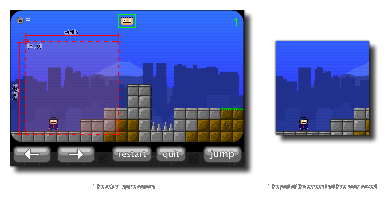

screen_save_part(fname,x,y,w,h);
| Argumento | Descripción |
|---|---|
| fname | El nombre de archivo de la captura de pantalla para guardar |
| x | La coordenada x de la esquina superior izquierda del área de la pantalla para capturar |
| y | La coordenada y de la esquina superior izquierda del área de la pantalla para capturar |
| w | El ancho del área de la pantalla para capturar |
| h | La altura del área de la pantalla para capturar |
Devoluciones: N / A
Con esta función puede guardar una captura de pantalla de una parte del juego tal como aparece actualmente en la ventana del juego o en el navegador. Las coordenadas de selección se basan en el tamaño absoluto de la pantalla, por lo que (0,0) siempre es la esquina superior izquierda de la pantalla. A continuación se muestra una imagen que muestra cómo funciona esta función:  El archivo se guardará en el directorio de trabajo del juego.
NOTA: esta función no funciona en el destino HTML5.
if keyboard_check_pressed(ord("S"))
{
screen_save_part(working_directory +
"\Screens\Screen_"+string(num)+".png", 0, 0, 100, 100)
num += 1;
}
El código anterior toma una captura de pantalla de una parte de la pantalla del juego que tiene 100 píxeles cuadrados cuando el usuario presiona la tecla "S". Esta captura de pantalla se guarda en un directorio específico y se numera usando una variable que luego se incrementa.